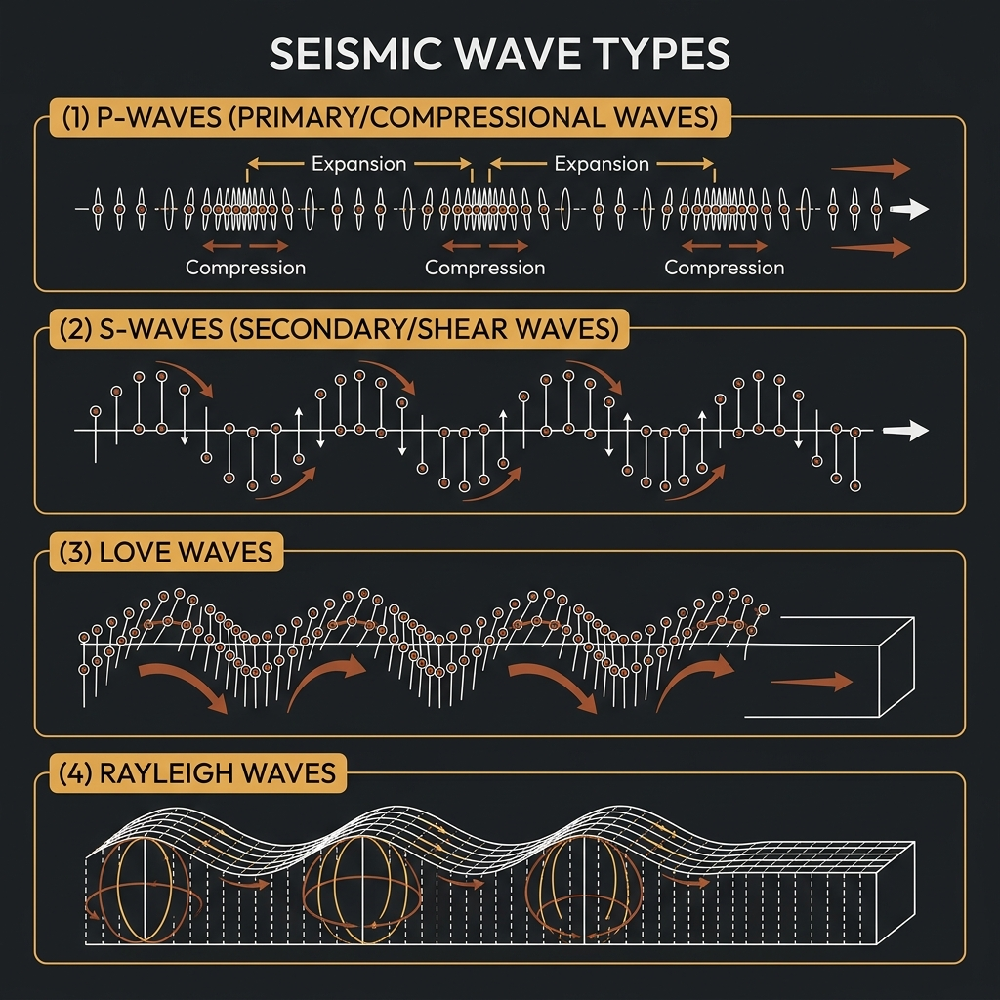

1. The Elastic Earth
To understand an earthquake, start with a ruler. Bend a plastic ruler gently — it bows, stores that deformation as elastic potential energy, and straightens again when released. Bend it past its limit, and it snaps. The two halves spring apart, releasing all the stored energy in an instant.
The crust of the Earth behaves in exactly the same way, but on a timescale measured in centuries. Tectonic forces — driven by the slow convection of molten rock deep in the mantle — push and pull rock masses against each other across geological faults. The rock deforms elastically, bending and straining without breaking for decades or centuries. Then, when the accumulated stress exceeds the frictional resistance along the fault surface, the rock ruptures. The two sides spring past each other. The stored energy is released.
This is the essence of elastic rebound theory, first articulated by the American geologist Harry Fielding Reid after his meticulous study of displacement along the San Andreas Fault following the 1906 San Francisco earthquake. Reid measured fence posts and land boundaries surveyed before the earthquake and found that the land on either side of the fault had been creeping slowly in opposite directions for decades — before the rupture snapped everything back, and then some.
The ground we stand on is, in this sense, a slow-motion spring — and earthquakes are what happens when it runs out of patience.
2. Hypocenter and Epicentre: Where Does an Earthquake Actually Happen?
There is an important distinction between where an earthquake begins and where it is felt most intensely at the surface. The hypocenter (also called the focus) is the actual point underground where the rock first ruptures. The epicentre is the point on the Earth's surface directly above the hypocenter.
An earthquake with a shallow hypocenter — say, five kilometres below the surface — will cause violent, concentrated shaking in a small area directly above it. The same amount of energy released from a hypocenter 200 kilometres deep will produce gentler, more diffuse shaking across a much larger region. Depth, therefore, is one of the most critical determinants of an earthquake's destructive character, entirely separate from its magnitude.
Shallow-focus earthquakes (less than 70 km deep) account for most of the world's seismic damage. Intermediate-focus events (70 to 300 km) are common in subducting oceanic plates. Deep-focus earthquakes (300 to 700 km) are a geological curiosity — they occur in conditions where rock, by all ordinary physical logic, should not be able to fracture, and are still not fully understood.
The 1989 Newcastle earthquake had a relatively shallow hypocenter — estimated at approximately 11 kilometres — which amplified its destructive effect on the surface. Had the same energy been released at 100 kilometres depth, Newcastle would have felt a jolt, not a catastrophe.
3. Seismic Waves: The Message the Earth Sends
When a fault ruptures, it does not simply shake the ground at the surface. It sends energy outward in all directions as seismic waves — ripples in the rock, much as a stone dropped into still water sends ripples across the surface. Seismic waves come in fundamentally different types, each with its own speed, character, and capacity for damage.
P-waves (Primary waves) are compressional waves — they push and pull the rock in the same direction as they travel, like the bellows of a concertina. They are the fastest seismic waves, typically travelling at 5–8 km/s through crustal rock, and they can pass through solids, liquids, and gases alike. P-waves are the first to arrive at a seismograph station after a distant earthquake. They tend to feel like a sudden vertical jolt or boom, and rarely cause significant structural damage on their own.
S-waves (Secondary waves) are shear waves — they move the rock side-to-side perpendicular to their direction of travel, like a snake in motion. They travel at roughly half the speed of P-waves and cannot propagate through liquids, which is why the detection of S-wave shadow zones was the original evidence that Earth has a liquid outer core. S-waves cause more lateral shaking than P-waves and are more damaging to structures.
Surface waves are the most destructive of all. Generated when body waves reach the Earth's surface, they travel along the boundary between rock and air like waves on the ocean. Love waves move the ground horizontally, shearing it side-to-side. Rayleigh waves produce a rolling, elliptical motion — the unsettling sensation of the ground appearing to breathe. Surface waves travel more slowly than body waves, but their amplitude can be enormous, and they carry by far the most energy that reaches buildings and infrastructure.
The critical practical implication of this wave hierarchy is the P-wave warning window — the time between the arrival of the (relatively harmless) P-wave and the arrival of the destructive S-waves and surface waves. Modern early warning systems detect this signature and can provide seconds to tens of seconds of alert before destructive shaking arrives. Japan's Shinkansen high-speed rail network uses exactly this system; sensors detect P-waves along fault zones and trigger automatic braking before S-waves reach the track.

4. Measuring Magnitude — Why the Scale Is Not What You Think
Most people are familiar with the Richter scale, and most people are wrong about what it actually means. The scale devised by Charles Richter in 1935 was a local magnitude scale (ML) — calibrated specifically for southern California earthquakes and a particular model of seismograph. It was never intended to be universal, and it breaks down completely for very large or very distant earthquakes.
Modern seismology uses the Moment Magnitude Scale (Mw), which measures the actual physical energy of an earthquake — the area of the fault that ruptured, multiplied by the average distance it slipped, multiplied by the stiffness of the rock. The result is the seismic moment, which is then converted to a magnitude value consistent across all earthquake sizes.
The critical feature of both scales — and the one most commonly misunderstood — is that they are logarithmic. Each whole-number increase in magnitude represents approximately 31.6 times more energy released, not ten times as is sometimes assumed. The difference between a magnitude 5 and a magnitude 7 earthquake is not twice the energy. It is approximately 1,000 times the energy. A magnitude 9 event — like the 2004 Indian Ocean earthquake off the coast of Sumatra — released more total energy than all other earthquakes in the preceding decade combined.
For context: the Newcastle earthquake of 1989 was Mw 5.6. The earthquake that generated the 2011 Tōhoku tsunami in Japan was Mw 9.1. On the moment magnitude scale, that is a difference of roughly 63 million times the energy.
References
- Reid, H. F. (1910). The mechanics of the earthquake, the California earthquake of April 18, 1906. Report of the State Investigation Commission, Vol. 2. Carnegie Institution of Washington.
- Shearer, P. M. (2019). Introduction to Seismology (3rd ed.). Cambridge University Press.
- Gaull, B. A., Michael-Leiba, M. O., & Rynn, J. M. W. (1990). Probabilistic earthquake risk maps of Australia. Australian Journal of Earth Sciences, 37(2), 169–187.
- Geoscience Australia. (2019). The 1989 Newcastle Earthquake. Australian Government.
- Kanamori, H. (2001). Energy budget of earthquakes and seismic efficiency. Earthquake Thermodynamics and Phase Transformations in the Earth's Interior, 76, 293–305.